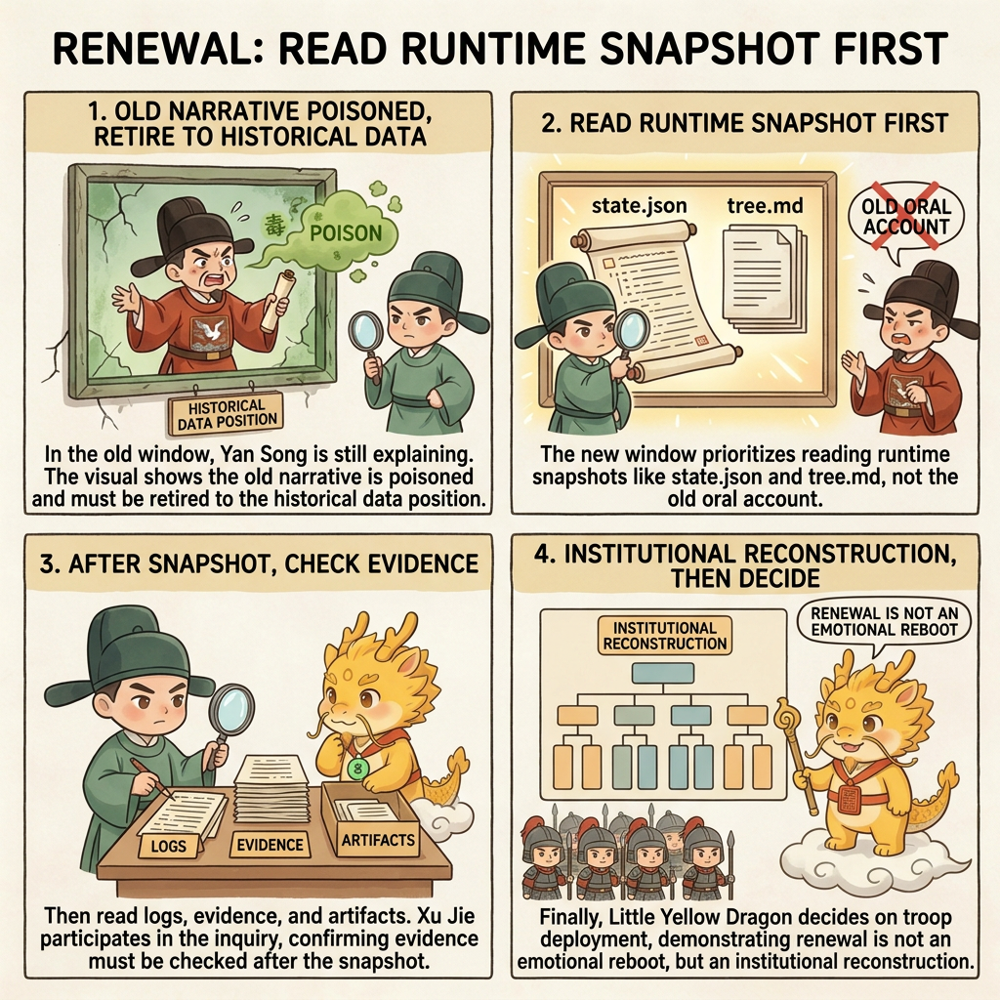
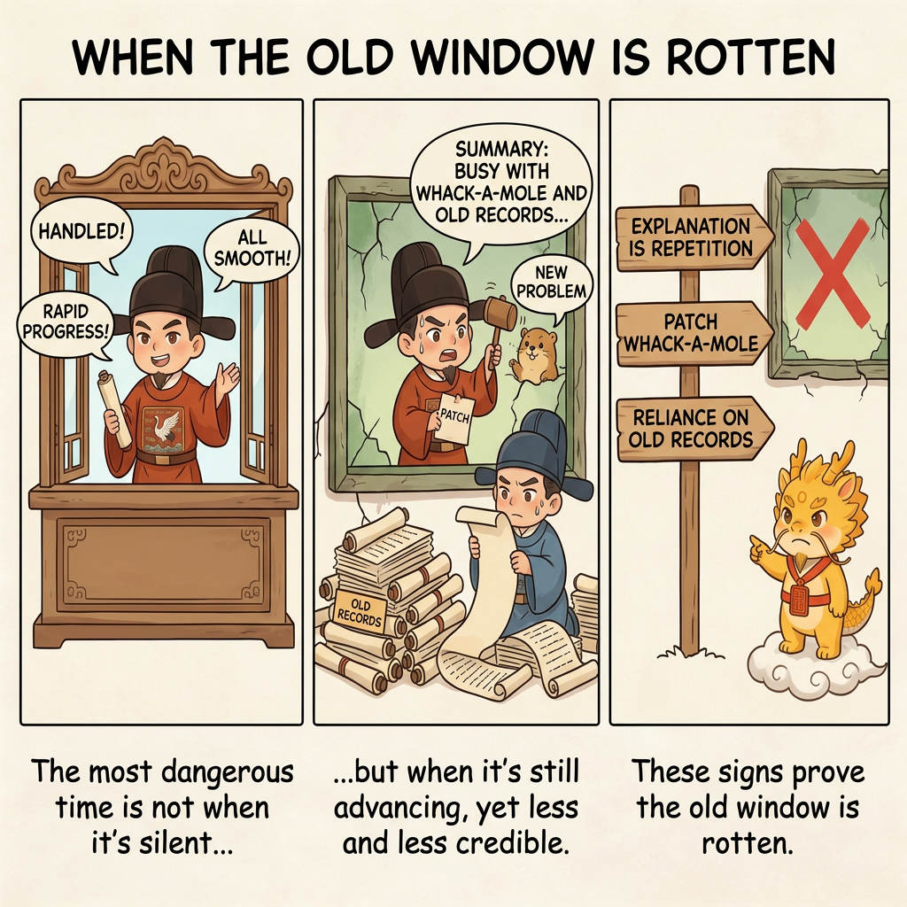
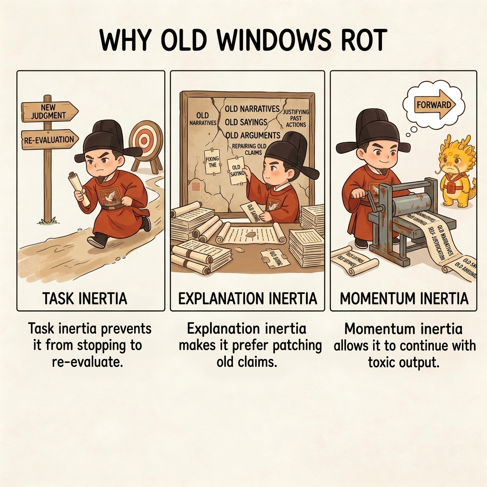
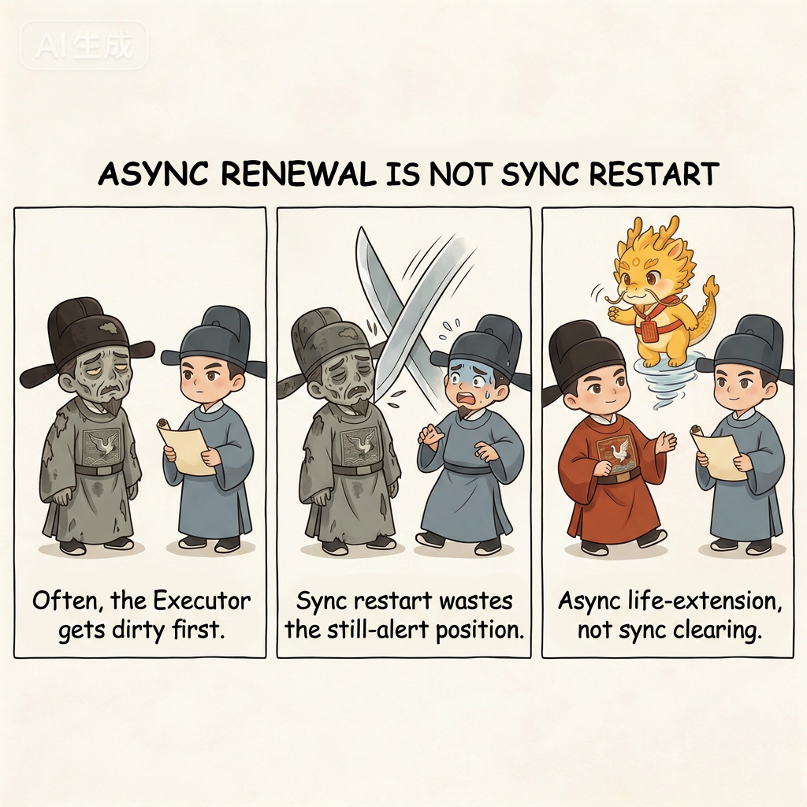
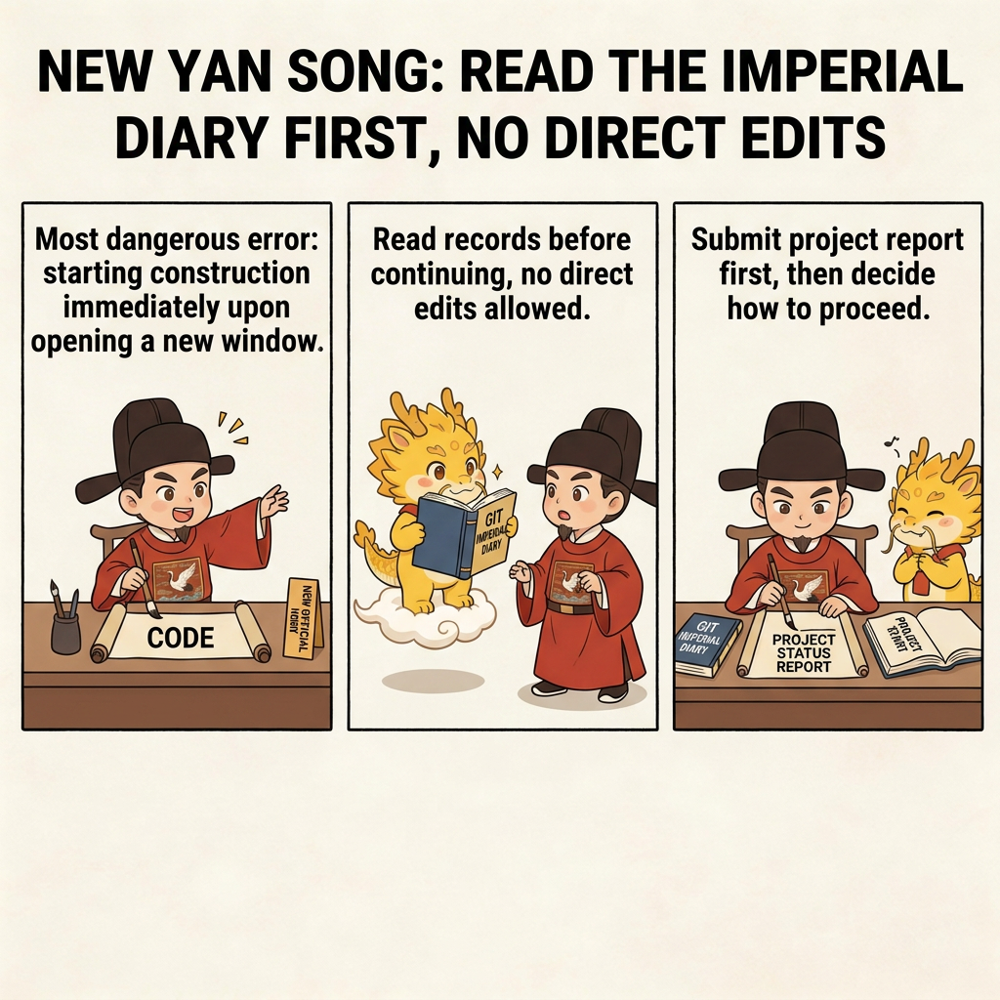

Deep Water
Seven-Stars Renewal

Seven Stars Renewal
Table of Contents
- What This Page Solves
- Spotting the Problem: When the Old Window Has Already Decayed
- Explaining the Problem: Why the Old Window Decays
- How the Public Literature Mitigates Context Decay, and Why That Still Is Not Enough
- Why the Default Should Be Asynchronous Renewal, Not Synchronized Restart
- Solving the Problem: How Seven Stars Renewal Works
- Common Misunderstandings
- One-Line Conclusion
- Corresponding Implementation
- Related Pages
What This Page Solves
When many people first hear the phrase "renewal," they usually fall into one of two misunderstandings.
The first misunderstanding treats it as an emotional move: the window has become dirty, you are irritated, the model is getting harder to control, so you simply open a fresh chat and hope the new one will somehow be smarter.
The second misunderstanding comes from a different direction: if the wider world is already building context compaction, external memory, artifacts, history, and progress files, then maybe good enough context management should be able to keep the old window alive indefinitely. In that case, why talk about renewal as a separate topic at all?
Neither understanding is enough.
In Cyber-Ming-Protocol, Seven Stars Renewal is not about "how to switch windows elegantly." It solves a much harder problem:
When the old window is no longer trustworthy, how do you let it die properly in institutional terms, and let the new window inherit the work in a legitimate way?
So the real questions on this page are:
- When does the old window count as decayed and not worth forcing any further?
- Why do windows decay, beyond the simple claim that "the context got long"?
- How does the public literature currently handle long-range context and cross-window continuity?
- Why do those methods still not equal detoxification or reconstruction of a clear position?
- And therefore why do you need Seven Stars Renewal, and how exactly does it work?
In other words, Seven Stars is not a variant of context-management technique. It is the protocol's break-and-continuation mechanism. It solves not "how to keep the old window alive longer," but "when to cut, and how to cut without surrendering sovereignty."
There is one more boundary that needs to be nailed down up front: Seven Stars is not synchronized restart by default. It is asynchronous renewal.
The reason is simple. The executor position and the audit position do not carry the same information density, and they do not enjoy the same golden period of usable context. In most real cases, Yan Song decays first and Xu Jie decays later. So the most common move, and the move with the lowest sovereignty cost, is not to tear both sides down together, but to rotate the executor position first and squeeze as much value as possible out of the still-clear auditor.
Spotting the Problem: When the Old Window Has Already Decayed
The most dangerous thing about window decay is not a sudden total failure. Much more often, the window still appears to be advancing. It still replies. It still proposes plans. It still produces summaries. But what it says is becoming less and less trustworthy.

The most dangerous moment is not when the window is obviously dead. It is when:
It is still talking, you are still moving forward with it, and yet you can no longer tell whether it is speaking from current fact, stale memory, path dependence, or an explanation meant to keep itself alive.
The most common warning signs are usually these.
First, the Explanations Sound More and More Like Summary, Not Mechanism
Instead of telling you:
- Which change introduced what
- Which log actually proved what
- Which test truly moved from red to green
it starts giving you lines such as:
- "It should already be covered"
- "The logic is fine"
- "It is probably this"
That means it has started using tone to preserve momentum, instead of using evidence to preserve credibility.
Second, Every New Change Is Just Patching the Previous Patch
This is another very strong sign. On the surface, the window still looks diligent: something breaks, and it patches that exact place. But if you step back, you realize it is increasingly doing one of these things:
- Fixing the side effects left behind by the previous round
- Using a new patch to cover the problem in the old patch
- Playing whack-a-mole along the same mistaken narrative
That means it has already slipped into inertial repair, instead of still standing in a clear position from which it can rebuild the system.
Third, It Needs More and More of the Old Chat History in Order to Continue
If every attempt to continue work requires you to keep scrolling upward and checking whether "we already said this before," that is usually not a sign of stable continuity. More often it means the current window has become dependent on its own old narrative.
Once the precondition for further progress becomes "we must inherit the entire old conversation chain," you should start asking whether what is being inherited is necessary history or polluted explanatory inertia.
Fourth, You Can No Longer Clearly Say Where the Project Actually Stands
This is almost the hardest signal of all. If you can no longer answer clearly:
- What is already complete
- Which completed parts are backed by evidence
- What the biggest unresolved blocker is
- What the safest next starting point would be
then the old window's continuous forward motion can no longer be treated as evidence that you still understand the current state of the project.
The essence of window decay is not merely that the model starts making mistakes. It is this: the window is still moving forward, but you can no longer rely on it to give you a trustworthy current picture of the project.
Explaining the Problem: Why the Old Window Decays
Here we need to turn "decay" from a vague feeling into a structural issue.

An old window does not decay only because token counts grow, and not only because model memory is imperfect. The deeper reason is that any long-running executor position accumulates three kinds of inertia if it runs long enough.
First, Task Inertia
Once a window has pushed along a target for many rounds, it becomes more and more likely to assume that the most important thing is to keep advancing along that road, rather than stop and ask whether the road is still the right one.
That inertia makes it harder for the window to say, on its own initiative: "My grasp of the situation is no longer reliable."
Second, Explanatory Inertia
Once a window has already written explanations for several rounds of its own behavior, it becomes more and more likely to keep speaking through that same explanatory structure. Even if the facts have changed, it tends to repair the old explanation instead of overturning it.
That is why old windows so often drift into pseudo-coherence. The problem is not that they stop thinking. The problem is that they keep thinking through what they have already said.
Third, Momentum Inertia
Long-running windows are very good at manufacturing one particular illusion: "Because I am still producing output, I must still be moving forward."
But output is not progress. Continuous replies are not continuous trustworthiness. And a longer explanatory chain is not the same thing as getting closer to truth. Very often, the window is no longer advancing the project. It is advancing its own narrative about the project.
So the real danger of an old window is not that it has no memory. It is this:
It keeps talking while carrying already-formed memory, already-formed explanations, and an already-addictive sense of progress.
Once those things turn toxic, inheriting the old window is no longer a continuity advantage. It becomes inherited contamination.
How the Public Literature Mitigates Context Decay, and Why That Still Is Not Enough
This layer matters, because otherwise Seven Stars Renewal can be mistaken for just another internal ritual. In reality, the public literature has already widely acknowledged that long-running tasks cannot rely on raw context alone. They need external artifacts, memory, and context-management machinery.
First Route: Harnesses, Artifacts, and History
Anthropic makes this explicit in Effective harnesses for long-running agents. When complex projects run across multiple context windows, each new session is like a new engineer with no memory, so continuity must be carried by external artifacts such as an initializer agent, a progress file, git history, and a feature list.
That route solves problems such as:
- Preventing a new session from starting from total amnesia
- Letting the agent regain project state more quickly
- Avoiding the need to rediscover everything from scratch across windows
This is the same battlefield that Cyber-Ming-Protocol addresses with Git chronicles, evidence hubs, and handover packets.
Second Route: Context Compaction and Agent Loop Management
OpenAI's public documentation has also elevated compaction and context management into first-class long-running-agent capabilities. The Compaction guide says clearly that long interactions need server-side or standalone compaction so that context can shrink while retaining the state required for subsequent work.
That route solves problems such as:
- Preventing context windows from filling too quickly
- Keeping tool calls and long interactions from exploding cost
- Letting old windows survive longer
In essence, it is working on life extension.
Third Route: Memory Systems and External Memory
The broader memory-systems route is also advancing quickly. Surveys and paper lists such as Memory in the Age of AI Agents show clearly that factual memory, experiential memory, and working memory are all being treated as core infrastructure for long-running agents.
The core judgment there is also consistent:
- Raw context is not enough
- External memory is necessary
- Long-running tasks must rely on retained, searchable, compressible historical material
So the public world is not ignoring this problem. Quite the opposite: it broadly agrees that contexts decay, and that long-running work must lean on external artifacts, memory, and management mechanisms.
Why Those Methods Still Are Not Enough
What lifts Seven Stars Renewal above the general conversation is not the claim that the public literature failed to notice the issue. It is the claim that those methods are better at continuing a task than at cutting off a wrong narrative.
The Limit of Harnesses, Artifacts, and History
They are good at continuing the work, but they do not automatically answer:
- Should the current window be cut off at all?
- Has the old window's explanatory inertia already become toxic?
- Is the new session inheriting the project correctly, or simply inheriting an old mistake?
They are better at building bridges than at deciding when to blow one up.
The Limit of Compaction and Context Management
They are good at extending a window's life, but they do not automatically judge:
- Whether compaction is preserving necessary state
- Or merely keeping an old narrative alive
- When the feeling that the window can still continue has already become an illusion
Compaction can prolong a window. It does not decide when the window should die.
The Limit of Memory Systems
They are good at retaining more history, but they do not naturally guarantee:
- That the retained history is trustworthy
- That the memory being preserved is not already toxic
- That old understanding will not keep contaminating future windows
Remembering more does not mean remembering more correctly.
So the real distinction Seven Stars Renewal introduces is this:
Mainstream practice is trying to keep old windows alive longer. Seven Stars Renewal solves a different problem: when the old window has already become toxic, how do you let it die properly and let the new window inherit correctly?
That is also one of the deepest differences between Cyber-Ming-Protocol and many public routes:
You retain the power of life and death over every context. You are not merely managing memory, compressing memory, or preserving memory. You can also judge whether that memory has become toxic, and decide whether it deserves to keep living.
That is not a tool difference. It is a sovereignty difference.
Why the Default Should Be Asynchronous Renewal, Not Synchronized Restart
Now the logic is complete. The public literature is better at continuing tasks, extending windows, and storing more history, but not at deciding whether the current window should be cut off. The institutional answer Seven Stars Renewal gives is therefore this: default to asynchronous renewal, not synchronized restart.

README.md already states the principle clearly: this is rotational renewal through asynchronous context reset. You do not wipe every position in one sweep. You rotate positions according to their decay rate.
Why is the default asynchronous? Because the executor position and the audit position carry different loads.
First, Yan Song Carries the Heavier Information Load, So He Usually Decays First
Yan Song typically bears:
- A longer task chain
- Denser command echoes
- More local trial and error
- More immediate explanations of his own behavior
He has to do the work and explain why he is doing it. That makes him easiest to dirty through task inertia, explanatory inertia, and momentum inertia together.
Second, Xu Jie Is a Narrow-Context, High-Density Role, So the Golden Period Lasts Longer
Xu Jie normally sees only the key materials routed by the human:
- Plans
- Assertions
- Logs
- Physical evidence
- Project reports
The total amount of information is smaller, but the density is higher, the noise is lower, and the burden of self-justifying execution is far lighter. So in most real situations, Xu Jie decays later than Yan Song.
Third, Synchronized Restart Wastes a Position That Is Still Clear
If Yan Song is already dirty but Xu Jie is still clear, restarting both at once simply wastes a high-level judging position that still has value. You would be discarding the very window that could still audit the old executor, judge toxicity, and help rebuild the current state.
So Seven Stars Renewal does not default to "everyone dies together." It defaults to this:
Whoever decays first rotates first. Whoever is still clear keeps judging.
That is why it is more helpful to understand the mechanism as asynchronous sovereignty rather than synchronized reset: the human center holds life-and-death authority over each context separately, instead of only knowing how to restart them in a batch.
Solving the Problem: How Seven Stars Renewal Works
At this point, Seven Stars itself is not very complicated. The hard part has never been the wording of the instructions. The hard part is whether you are willing to stop treating "keep using the old window" as the default.
Since the default should be to rotate the executor position first, not clear the whole system in one sweep, the first move in Seven Stars is not "restart." It is "judge first."
The minimal version of Seven Stars can be understood as a very simple institutional method for reopening work. But its default move is not two-sided synchronized restart. It is asynchronous rotation.
Step 1: Become Suspicious First, and Do Not Force the Entire Judgment onto Your Own Brain
Often the first thing you feel is not "the window is dead," but simply that something is off:
- The explanations are getting thinner
- The changes are starting to look like whack-a-mole
- You are beginning to suspect that the window has been dragged dirty by its old narrative
At that point, you do not need to carry the whole judgment alone in your own head. The safer move is to start a formal judgment process first.
In other words, if you are unsure whether Yan Song has decayed, you can first route the current key materials, recent reports, key logs, and the most recent git log entries to the still-clear Xu Jie and ask him to judge:
- Whether Yan Song is now repeating the old narrative
- Whether its project report is drifting away from physical evidence
- Whether it should still be used, or whether it should be deposed
This step is extremely valuable because it upgrades "I have a bad feeling" into an institutional judgment procedure instead of making you shoulder the whole uncertainty privately.
Step 2: Declare the Old Yan Song Dead First, and Do Not Let Him Keep Struggling On
Once those signs really appear, do not let the old window keep coding, keep explaining, and keep reviving itself at the same time.
The important move here is not to scold it. It is to stop the bleeding:
- Stop advancing the main line inside the old window
- Stop letting the old window define the current truth of the project
- Demote it to a source of historical material instead of treating it as the current judging position
The old window is not worthless. But at this point its value has dropped from "keep working" to "leave behind the last extractable materials."
Step 3: By Default, Rotate Only Yan Song, Not Xu Jie as Well
This is one of the easiest places to get wrong, and one of the most important boundaries in the whole ritual.
By default:
- Yan Song decays first
- Xu Jie decays later
- So renew the executor position first, rather than restarting the executor and auditor together
As long as Xu Jie is still stable, keep him in place and use the golden period that remains to:
- Audit the old Yan Song's last report
- Judge whether the old Yan Song should be removed
- Constrain the handover boundary for the new Yan Song
- Prevent the new Yan Song from inheriting the old mistake on day one
The spirit of this step is not conserving window count. It is maximizing the value of whatever position is still clear.
Step 4: Light the Executor Lamp - Make the New Yan Song Read the Git Chronicles First, Not Start Coding Immediately
Renewing the executor position is actually quite simple. In the minimal version, it may require only one thing:

- Make the new executor window read the recent relevant
git log
If the repository also has README.md, AGENTS.md, skill files, or project rules, you can add those too. But the minimum skeleton is the Git chronicles, because they are the most trustworthy dynastic record at the execution layer.
The key requirement here is not "resume quickly." It is this:
- Tell the new window explicitly that the old window has lost default credibility
- Tell it explicitly that the human center is still in command and that the Xu Jie audit position is still active
- If useful, say it directly: I am still here, Xu Jie is still here, and you are taking the executor seat after the old Yan Song's removal
- Require it to submit a project status report based on the Git chronicles before it touches the code
That report should answer at least:
- What is already complete
- What each of the most recent key commits resolved
- What the biggest unresolved blocker is
- If work is to continue, what the safest next starting point would be
So the essence of executor renewal is not "inherit the old chat." It is this:
Let a relatively clean executor stand on top of the Git chronicles and submit a fresh project status report.
Step 5: Only Light Xu Jie's Lamp When Xu Jie Itself Starts to Decay
This point also needs to be nailed down tightly: Xu Jie is not a synchronized-restart target by default.
Only when Xu Jie itself begins showing signs like these should it be renewed:
- Its interrogation starts sounding like it is merely replaying old disputes
- Its audit relies more on old impressions than on current materials
- You suspect it is also starting to confuse old conclusions with present evidence
In other words, Xu Jie's renewal is usually the second beat, not the first.
Step 6: Light Xu Jie's Lamp - The New Auditor Inherits the Mandate and the Report, Not the Old Quarrel
Renewing Xu Jie can also be very simple.
In the minimal version, you do not even need to feed it a huge volume of old chat. You can:
- Send it the repository's GitHub link directly
- Tell it explicitly: you are now taking the role of Xu Jie
- State that its job is to audit, interrogate, identify pseudo-completion, and detect contamination from old narratives
Then hand over the project report that the new executor just prepared from git log and ask it to examine:
- Whether the report has quietly swapped out the actual current state of the project
- Which judgments are supported by chronicles and physical evidence
- Which parts are still only the executor's provisional inference
- Whether the system can really continue, or whether reconciliation is still needed first
The key point is that Xu Jie does not need to inherit all the old window's emotions and quarrels. It only needs to inherit two things:
- The mandate
- The current report
The purpose of auditor renewal is not to carry every old dispute forward word for word. It is to restore the power of interrogation through a relatively clean high-level window.
Step 7: Let the Current Xu Jie and the Current Yan Song Reconcile Accounts Before Deciding Whether to Advance Again
At this point, the core of Seven Stars is complete. You are no longer relying on the old window's closing speech about itself. You have rebuilt a currently valid pair of executor and auditor positions. That valid pair does not necessarily mean both sides were just restarted. It may be:
- New Yan Song plus old Xu Jie
- New Yan Song plus new Xu Jie
But the most common default form is the first.
The next move is not to rush back into work. The next move is to check whether the two positions have formed a trustworthy current snapshot:
- Does the new executor's project report stand up?
- Has Xu Jie identified the gaps, ambiguities, and pseudo-completion risks inside it?
- Do the two sides at least minimally agree on the biggest blocker and the safest next step?
Only after the reconciliation basically holds do you launch the campaign again.
If it does not hold yet, keep interrogating. Do not rush the new executor back into code changes. The biggest taboo in Seven Stars is switching to a fresh window and then immediately shoving it back into the old momentum.
Step 8: Treat the Old Window as Historical Material, Not as an Edict
This final move is easy to overlook and absolutely critical.
After renewal, the old window does not disappear from the universe. It can still remain useful as:
- A source of old logs
- A source of old ideas
- A source of old error samples
But it no longer has the authority to define the project's present truth.
That is the biggest difference between Seven Stars Renewal and a casual "let's open a fresh page and see."
The old window is demoted into historical material. The new window is the one that is enthroned as the current position.
Common Misunderstandings
First Misunderstanding: Treating Renewal as Randomly Reopening a New Window and Hoping for Better Luck
That reduces an institutional move into an emotional one. Seven Stars is not "the old conversation got annoying, so let's try another one." It is the deliberate reconstruction of a clear position after the old context has lost trustworthiness.
Second Misunderstanding: Changing the Window but Not Changing the Narrative
If you open a fresh page but then feed the old toxic summary into it unchanged, the new window will often become nothing more than a more obedient loudspeaker for the old narrative.
Third Misunderstanding: Treating Seven Stars as Synchronized Restart of Executor and Auditor Together
That wastes a still-clear position. By default, Yan Song decays first and Xu Jie later, so the usual correct move is asynchronous rotation, not two-sided death at the same time.
Fourth Misunderstanding: Letting the New Executor Start Coding Immediately
That skips the most important step: submit a project status report first. Without that, so-called renewal quickly collapses into "swap the executor and keep charging blindly."
Fifth Misunderstanding: Thinking Compaction, Memory, and History Already Equal Renewal
Those things are important, but they mainly solve continuation and life extension. They do not automatically solve the question "has this memory already become toxic?" Without the human center holding life-and-death authority, an old narrative can simply be preserved more efficiently.
Sixth Misunderstanding: When Unsure, You Can Only Rely on Your Own Brain to Judge Harder
Not at all. The safer move is to start Xu Jie's judgment process first and let the still-clear audit position help determine whether Yan Song has already decayed, before the human center makes the final decision.
Seventh Misunderstanding: Treating the Old Window as Total Trash and Throwing It Away Completely
The old window is not without value. It is still a source of historical material. The real boundary is not "the old window is entirely wrong," but "the old window no longer has the authority to define current truth."
One-Line Conclusion
What Seven Stars Renewal is really trying to nail down is not merely "open a few more windows," but this:
When the old window is no longer worth trusting, the human center must hold its power of life and death: default to asynchronous sovereign rotation, demote Yan Song back to the position of historical material, squeeze as much as possible out of Xu Jie's remaining golden period, let Xu Jie judge whether Yan Song has already decayed when you are unsure, make the new Yan Song read the Git chronicles and submit a project report, and only renew Xu Jie when necessary. That is how reopening a window becomes institutional reconstruction instead of emotional restart.
Only then does renewal stop being luck and become a real act of taking sovereignty back from toxic context.
Corresponding Implementation
Manual Practice
- When you suspect the old window has started using explanation to preserve momentum instead of using evidence to preserve credibility, pause first instead of dragging it onward
- By default, rotate the executor position asynchronously first: let the still-clear auditor judge whether the current executor has already decayed
- If the repo already has
dev_repo/, make the new executor readstate.jsonandtree.mdfirst, then add the Git chronicles, the latest blockers, and the key evidence - Require a project status report before deciding whether to march again
Corresponding Skills
legacy-project-handovermaps most directly to the snapshot and brief needed for a new window to take overprobe-first-scoutis useful when you are unsure how bad the situation already is and need a minimum probe before attempting aggressive repair through an old narrativeglobal_rulescontinues to preserve the skeleton of "audit before action" and "no completion without evidence," so that renewal does not immediately collapse back into blind rushingauditor-succession-promptpackages a cleaner renewal packet for the auditor side and should prefer the currentdev_repoexecution packet when it exists
Corresponding Web Templates
- This page maps most directly to
succession_judge_template.md - When you are unsure whether the current window has already become toxic, first give the Web auditor recent reports, logs, screenshots, and
git logexcerpts, and let it judge whether to continue, interrupt, or renew - If you want the clearest explanation of why Web audit templates are not local skills, see Protocol, Skill, Docs: How the Three Pieces Relate